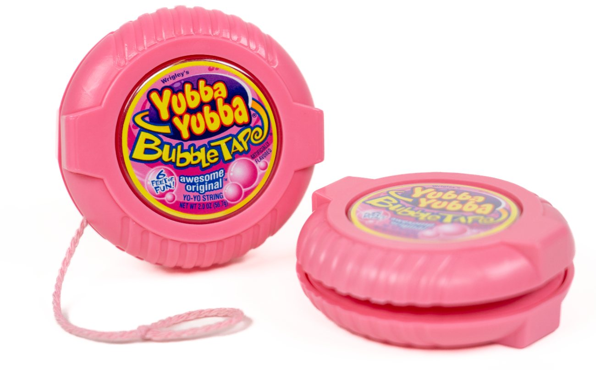

YubbaYubba

Design methodology
Design for manufacturing and assembly (DFMA)
Course2.008: Design and Manufacturing II
TimelineSpring 2026
TeamMichelle Lam, Layla Stanton, Daniel Nwazue, Toni Tang (all MIT '27)
Tools
Fusion CAD & CAM
CNC milling
Plastic injection molding
Thermoforming
YubbaYubba is a yo-yo my team designed and mass-manufactured for 2.008: Design and Manufacturing II, paying homage to the iconic Hubba Bubba bubble gum. Applying design for manufacturing and assembly (DFMA) principles, we produced 50+ identical yo-yos from two injection-molded parts and one thermoformed part, assembled without adhesives — every one of which passed the drop test.
[CONFIRM: add your role on the team.]
Context/Motivation
2.008 culminates in a team project: designing and mass-producing a yo-yo. The requirements were to manufacture 50 identical yo-yos from two injection-molded polypropylene parts and one thermoformed part (PETG or HIPS) that survive a 4 ft drop test — with no adhesives allowed.
Problem Framing
With no adhesives, every joint had to hold through geometry alone, and survive a 4 ft drop. [NEEDS INPUT: your design goals beyond the requirements — the Hubba Bubba look, play feel, and the production/time constraints you were working under.]
Process
Interference fit analysis and validation
With adhesives off the table, the parts had to stay together through interference fits. By binning parts, we brought 91.08% of interference fits within spec.
[NEEDS INPUT: how you sized the interference, and how binning worked in practice.]
DFM: reducing manufacturing time
[NEEDS INPUT: e.g., cycle time, cooling time, toolpath changes — before/after numbers.]
DFM: eliminating surface defects
[NEEDS INPUT: which defects (sink, flash, short shots), causes, and fixes.]
Double thermoform to reduce wear
[NEEDS INPUT: what was wearing, and how a second thermoform layer fixed it.]
Room for Improvement
[NEEDS INPUT]
Outcome
- 50+ yo-yos produced
- 91.08% of interference fits in spec, using binning
- 100% pass rate on the 4 ft drop test
Reflection
[NEEDS INPUT]